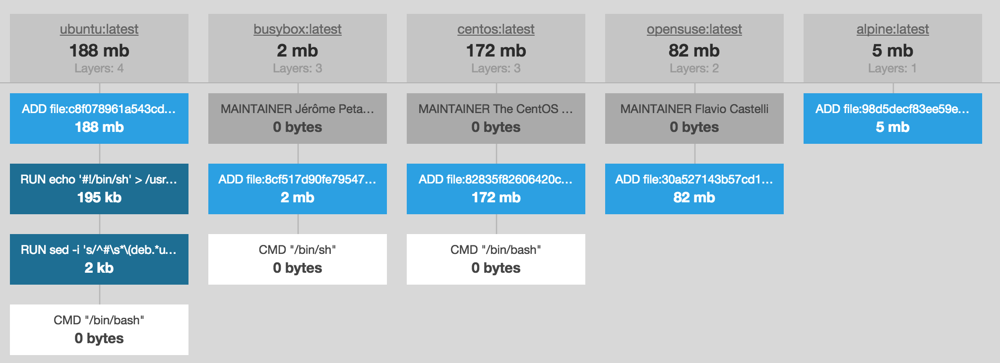
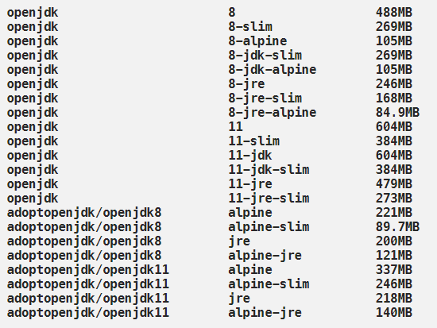

Spring Boot 도커 이미지 최적화
JAVA, 그러니까 Spring Application 을 도커 이미지로 만들어 보면, 500 ~ 700M 사이즈의 이미지가 생성된다. 이는 일반 OS 이미지를 사용하고 필요없는 툴이나 파일까지 포함해서 생성했기 때문이다. 그러나 이를 최적화하면 빌드와 배포 시간을 단축할 수 있다. 최적화에는이미지 사이즈를 줄이고 레이어를 세분화 해서 캐시를 활용하는 두 가지 방법이 있다.
이미지 사이즈 경량화
알파인 리눅스는 가볍고 간단하고 보안성을 목적으로 개발한 리눅스 배포판이다.

Java 알파인 이미지
alpine linux를 기본으로 해서, 애플리케이션 구동을 위한 이미지들이 이미 많이 있는데, java의 경우 openjdk 기반의 다양한 이미지가 있다.

이미지 사이즈를 보면 사이즈 차이가 많이 나는데, adoptopenjdk/openjdk{version}:alpine-jre 를 사용하는 것이 좋다. slim prefix가 붙은 이미지의 사이즈가 가장 작은데, 이는 openjdk -headless 패키지를 사용한 것으로 자바 런타임 환경에서 필요한 최소한의 패키지만 설치되어 있다. 그러나 openjdk 만 사용되고 공간 제약이 있는 경우에만 사용해야 한다. 그 외에 추가로 실행되어야 하는 agent 나 daemon 이 있는 경우, 실행이 안될 가능성이 높아 테스트가 필요하다.
여기서 더 나아가서 사이즈가 가장 작은 이미지를 베이스로 삼고 필요한 라이브러리, 툴을 추가해서 커스텀 이미지를 만들 수도 있다.
JDK보다는 JRE
자바 런타임용 컨테이너를 만들때, 컴파일러가 포함된 JDK 환경을 사용한다는 것이다. 보통 자바 런타임은 JDK 없이 JRE 만 있어도 충분하다. 이미지 생성 과정에 JDK 가 필요하다면, 멀티-스테이지 빌드를 활용하자.
FROM openjdk:11-jdk as builder
WORKDIR application
ARG JAR_FILE=target/*.jar
COPY ${JAR_FILE} application.jar
RUN java -Djarmode=layertools -jar application.jar extract
FROM adoptopenjdk:11-jre-hotspot
WORKDIR application
COPY --from=builder application/dependencies/ ./
COPY --from=builder application/snapshot-dependencies/ ./
COPY --from=builder application/resources/ ./
COPY --from=builder application/application/ ./
ENTRYPOINT ["java", "org.springframework.boot.loader.JarLauncher"]
위의 샘플을 보면 빌드 단계에선 JDK 이미지를 활용하고 실제 런타임용 컨테이너를 만들때는 JRE 이미지를 사용한다.
이미지 레이어 세분화
간단한 Java 애플리키에션을 만들고 도커 파일을 작성하자.
FROM openjdk:11-jre-slim
WORKDIR /root
COPY build/libs/demo-0.0.1-SNAPSHOT.jar .
CMD java -jar demo-0.0.1-SNAPSHOT.jar
이미지를 빌드하고 푸쉬하면,
# The push refers to repository [docker.io/perfectacle/spring-boot-demo]
# b61d0959344e: Pushing [================> ] 6.096MB/18.22MB
# 4bbad98352e9: Mounted from library/openjdk
# 9f6ec1d0a99c: Mounted from library/openjdk
# 8eb822456baf: Mounted from library/openjdk
# 0d59dc1d96ca: Mounted from library/openjdk
# 93df8ce6d131: Mounted from library/openjdk
# 5dacd731af1b: Mounted from library/openjdk
로그를 보면 Dockerfile 의 From 에 선언한 openjdk:11-jre-slim 이미지의 레이어에서부터 쌓아간다. 4bbad98352e9 ~ 5dacd731af1b까지가 openjdk:11-jre-slim 이미지의 레이어를 사용한 것이다. 그리고 제일 윗 라인에 b61d0959344e 이 부분이 Dockerfile 의 COPY 에 의해 생긴 레이어다. JAR 파일이 하나의 레이어를 차지하고 있는 것이다.
Application 의 소스를 수정하고 다시 빌드해보면, JAR 부분 이미지 레이어가 재생성되는 것을 볼 수 있다.
54f0c4fe51ff: Pushing [=> ] 590.8kB/18.22MB
# 4bbad98352e9: Layer already exists
# 9f6ec1d0a99c: Layer already exists
# 8eb822456baf: Layer already exists
# 0d59dc1d96ca: Layer already exists
# 93df8ce6d131: Layer already exists
# 5dacd731af1b: Layer already exists
4bbad98352e9 ~ 5dacd731af1b까지가 openjdk:11-jre-slim 이미지의 레이어이고,
이전 이미지에서 이미 생성해서 Docker Registry 에 캐시되어 있다. 따라서 해당 레이어는 재활용된다. 재활용 된다는 것은 push/pull 동작이 필요치 않아 빌드 속도에 큰 영향을 주게 된다. 게다가 실제 디스크에서 차지하는 용량도 해당 레이어를 재활용하기 때문에 매우 효율적이다.
반면에 JAR 파일에는 소스 코드, 환경 정보, 리소스, 디펜던시 라이브러리 등 모든 것이 담겨있다. 이를 Fat Jar라고 하는데, 효율적이지 못하다. 나열한 포함 요소들 중 하나라도 변경되면 해당 레이어는 캐시를 활용하지 못하고 재생성 되어야 한다.
Spring Boot Application
Spring boot 와 같은 자바 애플리케이션은 애플리케이션 파일은 /classes에 저장되지만, 나머지 참조하는 여러 jar 파일들이 있다. 이러한 jar 파일들은 변경이 없기 때문에, 다시 재배포할 필요 없이 캐시 하도록 레이어를 분리하는 것이 좋다.
그래서, 아래와 같이 애플리케이션 jar 파일을 푼 다음에, 각각의 디렉토리를 별도로 복사하는 방법을 사용한다. mvn package 에 의해서 생성된 jar 파일을 target/depdency 라는 디렉토리에 풀고, 각 디렉토리를 Dockerfile에서 각각 복사하도록 설정할 수 있다.
FROM openjdk:11-jre-slim
WORKDIR /root
ARG DEPENDENCY=target/dependency
COPY ${DEPENDENCY}/BOOT-INF/lib /app/lib
COPY ${DEPENDENCY}/META-INF /app/META-INF
COPY ${DEPENDENCY}/BOOT-INF/classes /app
ENTRYPOINT ["java","-cp","app:app/lib/*","com.example.demo.DemoApplication"]
빌드 스크립트 :
# maven
mkdir -p target/dependency && (cd target/dependency; jar -xf ../*.jar)
# gradle
mkdir -p build/dependency && (cd build/dependency; jar -xf ../libs/*.jar)
이를 새롭게 빌드 푸쉬해보면, 레이어가 추가된 것이 보인다.
aefdad4cf83c: Pushing [=> ] 592.9kB/18.12MB
# 3asdf23fge23: Pushing [==================================================>] 45.728kB
# c1asdf1254sd: Pushing [==================================================>] 20.728kB
# b13asd36b507: Pushing [==================================================>] 12.728kB
# 4bbad98352e9: Layer already exists
# 9f6ec1d0a99c: Layer already exists
# 8eb822456baf: Layer already exists
# 0d59dc1d96ca: Layer already exists
# 93df8ce6d131: Layer already exists
# 5dacd731af1b: Layer already exists
이제 소스를 수정하면, 소스 레이어만 새롭게 생성되고 나머진 캐시를 활용하게 된다. 그러면 빌드, 배포 속도가 기존보다 빨라진다.
aefdad4cf83c: Pushing [=> ] 592.9kB/18.12MB
# 3asdf23fge23: Layer already exists
# c1asdf1254sd: Layer already exists
# b13asd36b507: Layer already exists
# 4bbad98352e9: Layer already exists
# 9f6ec1d0a99c: Layer already exists
# 8eb822456baf: Layer already exists
# 0d59dc1d96ca: Layer already exists
# 93df8ce6d131: Layer already exists
# 5dacd731af1b: Layer already exists
여기서 알아야할 것은 만약 라이브러리 디펜시가 수정되어 해당 레이어가 재생성되면 그 뒤를 따르는 레이어들은 수정이 없었더라도 캐시를 활용하지 못하고 재생성된다는 점이다. 겹겹이 쌓아가는 레이어의 어느 부분이 변경되면 그 위에 올라가는 레이어도 새롭게 만들어서 쌓아야한다는 의미이다.
Reference
- https://brianchristner.io/docker-image-base-os-size-comparison/
- https://medium.com/@ievgen.degtiarenko/reduce-size-of-docker-image-with-spring-boot-application-2b3632263350
- https://perfectacle.github.io/2019/04/16/spring-boot-docker-image-optimization/
- https://bcho.tistory.com/1356
- https://bcho.tistory.com/1357
- https://spring.io/guides/gs/spring-boot-docker/